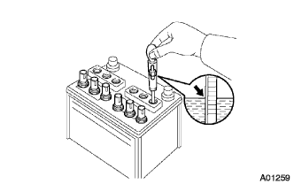
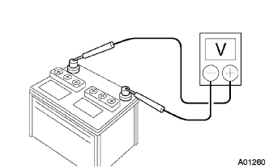
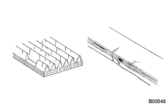
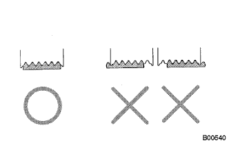
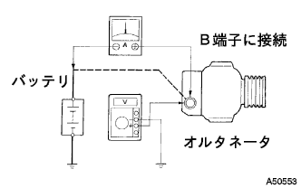
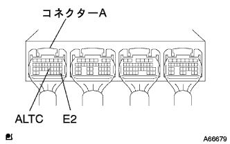

Charging system function inspection |
Liquid inspection (maintenance -free battery)
In the case of lower levels, exchanges.Or replenish distilled water.
Liquid inspection of each cell (other than maintenance -free battery)
In the case of lower levels or less, replenish distilled water.
|  |
Inspect the cross specific gravity of each cell.
|  |
In order to remove the charging of the surface, stop the engine after driving, turn the ignitsushi -si -wisitsu turn ON (within 20 seconds), and turn on the electric device (Handright, Blow Motor, Rear Defuzuga, etc.).
Turn off the Ignitsushi -sijongsuitsu and turn off the electric device.
Measure the cross between the terminals.
Inspect whether the cross -terminal is loose or corroded.
Inspect if there is a conduction in the hujibble link and fuse.
|  |
Inspect the belt wear or cracks.
|  |
Inspect that the belt is certainly engaged in the ribeal groove.
Check if the wire is in good condition.
Inspect that there is no noise from the alternator while the engine is started.
Warm the engine and turn off the ignitsushi -si.
Turn off all the electric equipment switches.
Turn on the ignitsushi -si -si -twin and confirm that the charge warnin gland lights up.
Start the engine and confirm that the lamp disappears.
|  |
If a tester is not used, connect the voltmeter to the charge circuit as shown below.
Remove the B terminal of the alternator and connect to the negative terminal of the current gauge.
Connect the plus terminal of the current gauge to the B terminal of the alternator.
Connect the positive terminal of the voltmeter to the B terminal of the alternator.
Connect the negative terminal of the voltmeter to the ground.
Charging circuit inspection
Use SST (Toyota Electrical Tester) to measure the cross voltage when the engine speed is raised to 2000R/min.
Use a SST (Toyota Electrical Tester) to use a high beam to Hita Broischesches into HI, and immediately measure the current with a high beam and a high beam to Hi, and set it to the engine rotation 2000R/min.
Wire harness inspection
Cut the connector A of the engine controlled compilation.
Cut the alternator connector.
Use a Toyota Electrical Tester to inspect the conduction between the connector A22 (ALTC) terminals of the engine control composer and the connector 1 (c) of the alternator.
Using a Toyota Electrical Tester, the connector A22 (ALTC) terminal ← → A28 (E2) is checked using a Toyota Electrical Tester.
Engine control compilation inspection inspection
Start the engine.
|  |
Use a Toyota Electrical Tester to measure the voltage between the connector A22 (ALTC) terminal ← → A28 (E2) terminals of the engine control compilation when operating the accelerator pedal.[*1]
| Accelerator pedal | Voltage [V] |
|---|---|
| ON | 0.6 or less |
| OFF | 4 or more |
Turn on the small lamp, check the same as [*1], and measure the voltage.
| Accelerator pedal | Voltage [V] |
| ON | 4 or more |
| OFF | 4 or more |
Turn on the air conditioner, make the same check as [*1], and measure the voltage.
| Accelerator pedal | Voltage [V] |
|---|---|
| ON | 4 or more |
| OFF | 4 or more |